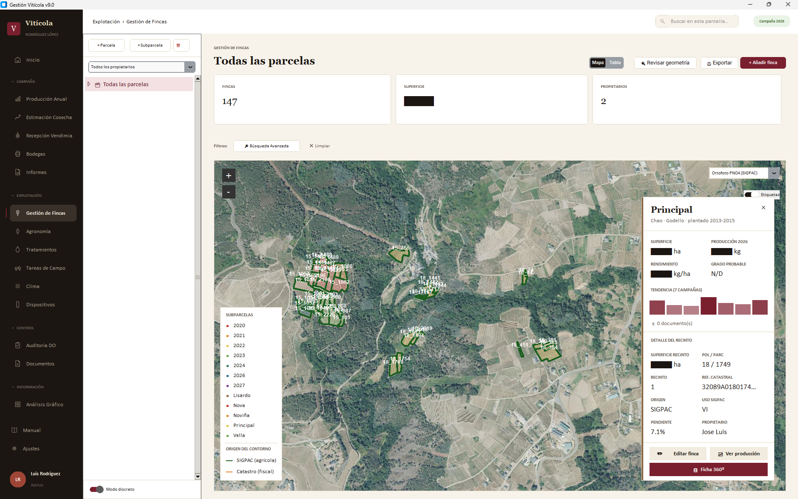
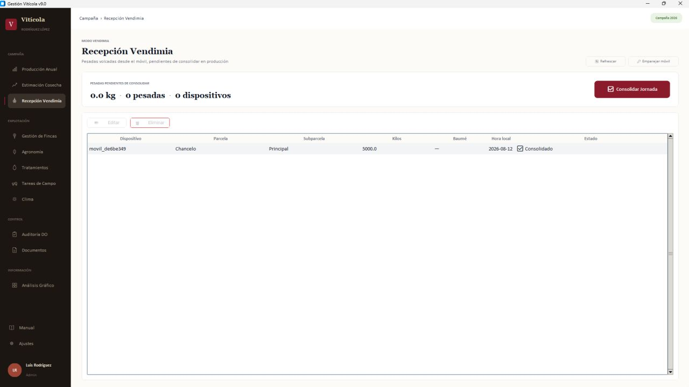
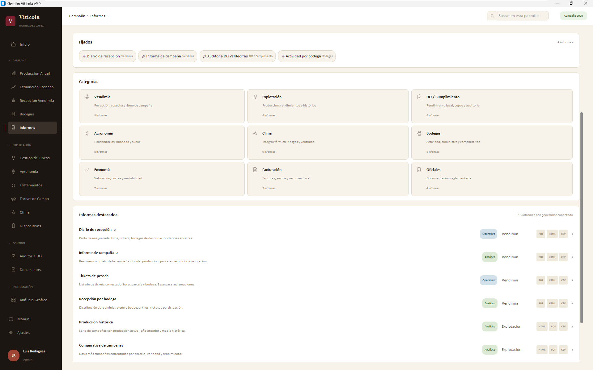
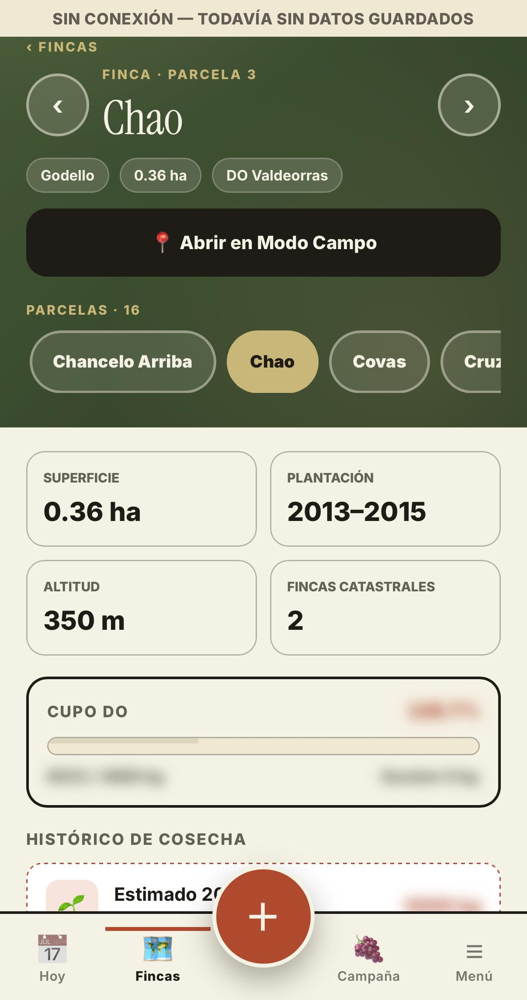

01 / TERRITORIO
Fincas y Ficha 360º
Parcelas, subparcelas, superficies y geometrías con integración de SIGPAC y Catastro. La Ficha 360º reúne producción, rendimiento, coste, tratamientos, tareas y contexto agronómico.
Herramienta de gestión vitícola para la explotación familiar
Gestión Vitícola reúne cartografía, campañas, agronomía, vendimia y documentación en una herramienta propia, desarrollada desde las necesidades reales de una explotación familiar. Está pensada para ayudar al pequeño viticultor a ordenar la información y consultar los datos de su explotación con contexto.

Una visión de conjunto
Un sistema que reúne territorio, producción, trabajo de campo y documentación. No todas las funciones tienen el mismo grado de madurez: aquí distinguimos sus capacidades y sus límites.
Parcelas, subparcelas, superficies y geometrías con integración de SIGPAC y Catastro. La Ficha 360º reúne producción, rendimiento, coste, tratamientos, tareas y contexto agronómico.
Histórico productivo, registro de kilos por subparcela, reparto ponderado por superficie y edad de la viña y estimación de cosecha introducida manualmente.
Historial de análisis de suelo, comparación con valores de referencia y plan de abonado con riqueza NPK por subparcela.
Cuaderno de tratamientos fitosanitarios, plazos de seguridad y seguimiento de labores. Algunas operaciones de edición conservan limitaciones conocidas.
Previsión e histórico de Open-Meteo, riesgo orientativo de mildiu, grados-día, balance hídrico y una ventana orientativa de vendimia. Requiere fincas con geometría y conexión para renovar los datos.
Registro de pesadas, fecha, cajas, grado y bodega de destino. Los tickets se sincronizan, se revisan en escritorio y se consolidan en producción.
Gestión de bodegas, condiciones por campaña y valoración estimada de las entregas según kilos y parámetros comerciales configurados. No genera liquidaciones ni facturas comerciales.
Importación de Hoja DO y RVG, vinculación con fincas y comprobaciones cruzadas para revisar cupos y datos declarados.
Gabinete de facturas, comparativas productivas y exportaciones PDF, HTML o CSV donde existe un generador disponible. El catálogo de informes sigue en ampliación.
Diseñada para salir al campo
La PWA móvil acerca la consulta y la captura de datos al lugar donde ocurren las labores. La sincronización no sustituye al escritorio: la aplicación debe estar abierta y los dispositivos deben poder comunicarse.
Pesadas, tratamientos y tareas desde el móvil, asociados a parcelas y subparcelas.
Los registros pueden quedar en una cola local y enviarse al recuperar la conexión con el PC.
En recepción de vendimia, revisar los tickets y volcarlos a producción cuando se confirma la jornada.
Condición técnica: el PC de bodega debe tener Gestión Vitícola abierto. Para instalar la PWA y preparar su uso sin cobertura se necesita HTTPS; el intercambio por red local también exige que los dispositivos puedan comunicarse.
La aplicación por dentro
Una selección de capturas reales del repositorio. Cada imagen muestra una vista concreta disponible; las funciones incompletas y sus condiciones se describen en Estado real.
Mapa, estructura de parcelas y acceso al contexto de cada finca.

Recepción de pesadas, revisión de registros y estado de consolidación.

Indicadores y visualización histórica para estudiar la evolución de la explotación.

Consulta móvil de la información de una finca.

Datos de campaña disponibles desde la interfaz móvil.
Arquitectura y decisiones técnicas
La aplicación de escritorio mantiene la base de datos principal. La API local comunica la PWA y los servicios externos aportan información específica, como cartografía, elevación y meteorología, cuando hay conectividad.
Componentes principales
Una combinación pragmática de escritorio, datos locales, cartografía y visualización, con una separación clara entre la gestión principal y el acceso desde el campo.
Python 3.13
Tkinter · CustomTkinter
SQLite · archivo local
Flask · REST / JSON
HTML · CSS · JavaScript
PWA · Service Worker · IndexedDB
Matplotlib · Plotly
Jinja2 · ReportLab
PDF, HTML y CSV según el informe
TkinterMapView · PyProj · GeoJSON
SIGPAC / FEGA · Catastro
Open-Elevation · Open-Meteo
Estado del desarrollo
Resumen de capacidades y limitaciones según el manual de usuario revisado en octubre de 2026. El proyecto sigue evolucionando; el grado de madurez de cada módulo importa tanto como su funcionalidad.
Gestión territorial, geometrías y resumen integrado por subparcela.
OPERATIVOProducción registrada, estimación manual, reparto proporcional, análisis de suelo y plan de abonado.
OPERATIVOConectados a datos reales, con limitaciones documentadas en ciertos flujos de edición.
OPERATIVO CON LIMITACIONESRecepción y consolidación de pesadas, condiciones por campaña y valoración comercial estimada.
OPERATIVO CON CONDICIONESImportación de Hoja DO/RVG, auditoría cruzada y gestión documental de facturas.
OPERATIVO15 de las 58 fichas tienen generador conectado según el manual; el resto sigue pendiente.
PARCIALEl umbral mostrado de 12.000 kg/ha es fijo; el margen utilizable se calcula sobre 7.000 y no debe usarse para control legal.
CON LIMITACIONESEl cambio de subparcela no se guarda al editar una tarea; otro posible fallo con tareas que empiezan hoy está pendiente de reproducir.
ERROR CONOCIDOEl mapa permite consultar y abrir documentos; asignarlos o cambiarlos desde esa vista está en desarrollo.
EN DESARROLLONo existe como pantalla independiente en la versión documentada.
NO DISPONIBLECondiciones del uso móvil y del clima: para sincronizar, el PC de bodega debe tener Gestión Vitícola abierto y ambos dispositivos deben poder comunicarse. Instalar la PWA y preparar su uso sin cobertura requiere HTTPS. La consulta o renovación meteorológica necesita conexión e información geográfica de las fincas; sus indicadores son orientativos.
Antes de compartir informes HTML: según el manual, la exportación HTML del Análisis Gráfico no respeta el modo discreto y puede incluir los kilos reales. Si necesitas ocultarlos, no compartas ese HTML; utiliza la exportación PDF, que sí respeta el modo discreto.
Herramienta en evolución
Gestión Vitícola reúne cartografía, campañas, agronomía, trabajo de campo y análisis en una solución propia basada en la experiencia de una explotación familiar.